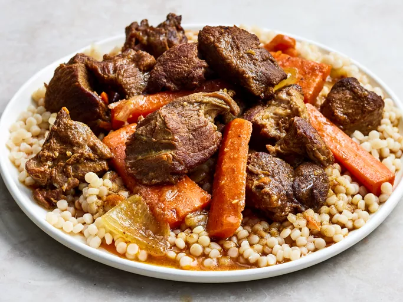

Tagine recipe
Home

Lamb Tagine
When I first made this Moroccan lamb tagine, I left the kitchen window open. The smell attracted several neighbors and my husband who came in and said that it smelled so good that he hoped it was coming from our house and not from someone else's! If you don't have a tagine, you can use a heavy-bottomed pot.
Ingredients
- 2 pounds lamb meat, cut into 1 ½ inch cubes
- 3 tablespoons olive oil, divided
- 2 teaspoons paprika
- ¾ teaspoon garlic powder
- 2 medium onions, cut into 1-inch cubes
Steps
- Place lamb and 2 tablespoons olive oil in a large bowl and toss to coat; set aside.
- Mix paprika, cinnamon, salt, garlic powder, coriander, cumin, cardamom, ginger, turmeric, cayenne, cloves, and saffron together in a large resealable bag. Add lamb to the bag.
- Heat remaining 1 tablespoon olive oil in a large, heavy-bottomed pot over medium-high heat. Add 1/3 of the lamb and brown well, 5 to 7 minutes.
- Add onions and carrots to the pot and cook for 5 minutes. Stir in garlic and ginger; continue cooking for an additional 5 minutes
- If the consistency of tagine is too thin, you may thicken it with cornstarch and water slurry during the last 5 minutes.